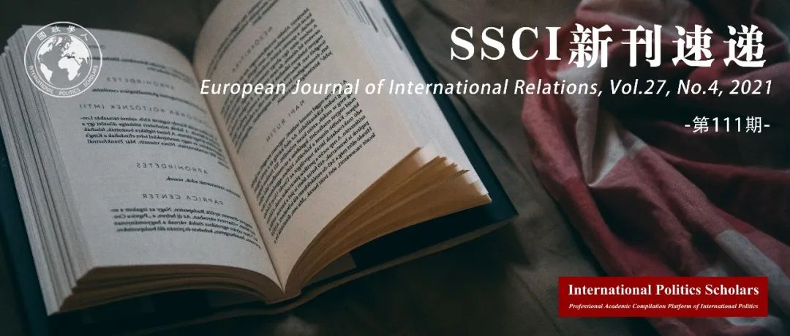

收录于合集
#新刊速递 123 个
#《欧洲国际关系杂志》 1 个

期刊简介
《欧洲国际关系杂志》（ European Journal of International Relations ）是欧洲政治研究联盟国际关系常设小组（the Standing Group on International Relations of the European Consortium for Political Research, SGIR）的同行评审旗舰期刊，由SGIR和欧洲国际研究协会组成的联合委员会共同管理。根据Journal Citation Reports显示，2019年该期刊的影响因子为3.474。

本期目录
1. 非殖民化自决：易洛魁护照与谈判主权
Decolonizing Self-Determination: Haudenosaunee Passports and Negotiated Sovereignty
2. 科学的国际等级制度：征服、合作与1959年南极条约体系
An international hierarchy of science: conquest, cooperation, and the 1959 Antarctic Treaty System
3. 战争即疾病：预防话语中的生物医学隐喻
War as disease: biomedical metaphors in prevention discourse
4. 民粹主义和对外援助
Populism and foreign aid
5. 联盟、支持信号和军事活动
Alliances, signals of support, and military effort
6. 委托规范：海湾合作委员会危机中的安全、信任与背叛
Entrusted norms: security, trust, and betrayal in the Gulf Cooperation Council crisis
7. 禁运后的武器进口
Arms imports in the wake of embargoes
8. 争端膨胀
Dispute inflation
9. 角色扮演、现实政治和“大国风范”：大战略中生存和社会表现的逻辑区别
Roleplay, realpolitik and ‘great powerness’: the logical distinction between survival and social performance in grand strategy
10. 政治学的现实主义科学：理解政治实践的艺术
The realist science of politics: the art of understanding political practice
11. 大理论是否塑造了官员的言论？
Does grand theory shape officials’ speech?
12. 全球多元化的终结？
The end of global pluralism?
13. 对批判理论危机的再思考
Critical theory in crisis? a reconsideration
01
非殖民化自决：易洛魁护照与谈判主权
题目： Decolonizing Self-Determination: Haudenosaunee Passports and Negotiated Sovereignty
作者： Sheryl R. Lightfoot，英属哥伦比亚大学政治科学副教授。
摘要： 《联合国土著人民权利宣言》（UNDRIP）一方面承认土著人民的自决权，另一方面针对土著人民的主张，在国家主权和领土完整权上提供保护。通常，这被认为是《联合国土著人民权利宣言》的内部不一致，另一个常见的批评是，土著人民只被承认拥有比其他民族更少的自决权。本文与这两种批评路线形成鲜明对比，认为《联合国土著人民权利宣言》对自决的阐述可能会带来自决的扩大和可能的重塑，而自决越来越与威斯特伐利亚的“主权”和“领土”概念脱钩，需要各国人民和国家之间不断进行谈判。基于原始的实地考察，包括对关键人物的一系列定性访谈，本文关于易洛魁联盟（Haudenosaunee Confederacy）签发和使用护照的案例研究，展示了易洛魁联盟如何在多个新的方向上推动对自决的实践和理解，并开创性地将多重主权纳入到国际关系的理论与实践中。
The United Nations Declaration on the Rights of Indigenous Peoples (UNDRIP) recognises both Indigenous peoples’ right to self-determination and simultaneously offers protections in regard to states’ right to sovereignty and territorial integrity vis-à-vis Indigenous peoples’ claims. Often, this is considered an internal inconsistency of the UNDRIP, and another common critique is that Indigenous peoples were only recognised as having a diminished right to self-determination, which is less than what everyone else enjoys. This article stands in contrast to these two lines of critique, arguing that the UNDRIP’s articulation of self-determination is potentially ushering in a broadening, and possible reshaping, of self-determination, which has been increasingly decoupled from singular Westphalian notions of ‘sovereignty’ and ‘territoriality’ in ways that require ongoing negotiation between peoples and states. This case study of the Haudenosaunee Confederacy’s issuance and use of their passports, based on original fieldwork including a set of qualitative interviews with key informants, demonstrates how the Haudenosaunee Confederacy is pushing the practice and understanding of self- determination in multiple, new directions to include plural sovereignties in deeply significant ways concerning International Relations in both theory and in practice.
02
科学的国际等级制度：征服、合作与1959年南极条约体系
题目： An international hierarchy of science: conquest, cooperation, and the 1959 Antarctic Treaty System
作者： Joanne Yao，伦敦玛丽王后大学政治与国际关系学院讲师。
摘要： 南极条约体系创建于1959年，旨在治理南极大陆，并以其展现科学在激发和平且理性的国际关系上的潜力而备受赞誉。本文用批判性的眼光审视了在国际政治中关于科学的乐观看法，并指出其作为一个全球等级结构，扮演着一个带有独占性质的南极俱乐部的守门人角色。作者论证了20世纪早期在南极的科学活动是与全球帝国主义等级制度密切相关的。科学既是一个文明化的国际身份标志，也是一个将行为者在南极的帝国主义行为合法化的社会表现，这就是Mattern 和 Zarakol的 “宽泛的等级制度“ 。1959年南极条约依赖于科学作为一个已有的宽泛等级制度，使竞争中的国家能够达成一个实用性协议并 “冻结“ 主权主张，同时加强科学在维持国际不平等方面的合法性，并使其制度化。在论证这个观点的同时，作者强调正式国际制度在连接其关于宽泛且功能化的等级制度的分析上的角色，并同时突出科学等级制度在组成现有国际秩序上的重要性。
The Antarctic Treaty System (ATS), created in 1959 to govern the southern continent, is often lauded as an illustration of science’s potential to inspire peaceful and rational International Relations. This article critically examines this optimistic view of science’s role in international politics by focusing on how science as a global hierarchical structure operated as a gatekeeper to an exclusive Antarctic club. I argue that in the early 20th century, the conduct of science in Antarctica was entwined with global and imperial hierarchies. As what Mattern and Zarakol call a broad hierarchy, science worked both as a civilized marker of international status as well as a social performance that legitimated actors’ imperial interests in Antarctica. The 1959 ATS relied on science as an existing broad hierarchy to enable competing states to achieve a functional bargain and ‘freeze’ sovereignty claims, whilst at the same time institutionalizing and reinforcing the legitimacy of science in maintaining international inequalities. In making this argument, I stress the role of formal international institutions in bridging our analysis of broad and functional hierarchies while also highlighting the importance of scientific hierarchies in constituting the current international order.
03
战争即疾病：预防话语中的生物医学隐喻
题目： War as disease: biomedical metaphors in prevention discourse
作者 ： Johanna Rodehau-Noack, 伦敦政治经济学院国际关系系博士研究生。
摘要： 已有的研究已经考察了军事干预、反叛乱和反恐怖主义话语中的生物医学隐喻。本文从这种隐喻也同样出现在当代预防冲突的话语中的观察出发，探究它们的思想渊源以及对战争和预防的理解的影响。根据档案分析，本文发现它们在预防话语中以两种方式表现。在大灾变的概念中，战争被比喻为一种流行病或瘟疫。这个比喻在19世纪由基督教和平主义者推广，并在20世纪的预防文件中得到了延续。当代的风险因素概念是以对政治体的威胁的触发条件来表述的。通过联结关于免疫和公共卫生的想象，它将社会和政治组织与身体的功能相提并论。本文认为，虽然冲突预防话语中的两种生物医学战争隐喻的概念都牢牢扎根于现代主义思想，但这种思想遗产的表现方式不同。大灾变的概念将战争和疾病与野蛮联系起来，以此将预防描绘成一个文明的目标。相反，风险因素的概念将战争视为一个科技性的问题，从而将重点转向通过知识和技术来管理和控制战争。此外，这两个概念都汇聚在一个需要保护的政治体的概念中，以及对世界秩序的隐含假设中，其中战争- 疾病是对 “健康规范 “的暂时偏离，而和平-健康则是理想和默认的事物状态。
Previous research has examined biomedical metaphors in discourses on military intervention, counter-insurgency and counter-terrorism. Starting from the observation that such metaphors also occur in the contemporary conflict prevention discourse, this article inquires into their intellectual origins and implications for the understanding of war and prevention. Drawing on archival analysis, it finds that they manifest in two ways in prevention discourse. In the cataclysmic notion, war is likened to an epidemic or plague. This metaphor was popularised by Christian pacifists in the 19th century and carried forth into 20th-century prevention documents. The more recent risk factor notion is couched in terms of enabling conditions for threats to the body politic. By engaging imagery on immunity and public health, it draws parallels between social and political organisation and functions of the body. The article argues that while both notions of biomedical metaphors of war in conflict prevention discourse are firmly rooted in modernist thinking, this intellectual legacy manifests differently. The cataclysmic notion associates war and disease with barbarism and thus paints prevention as a civilisational objective. The risk factor notion, on the contrary, represents war as a technico-scientific problem and thus shifts the focus towards governing and controlling war through knowledge and technology. Furthermore, both notions converge in the idea of a body politic that is to be protected and in the implicit assumption of world order in which war-as-disease is a temporary deviation from the ‘healthy norm’, while peace-as-health is the desired and default state of affairs.
04
民粹主义和对外援助
题目： Populism and foreign aid
作者： Tobias Heinrich, 美国南卡罗来纳大学副教授；Yoshiharu Kobayashi，英国利兹大学副教授；Edward Lawson Jr，美国南卡罗来纳州卫生与公众服务部。
摘要： 专家、从事发展的工作者和学者们担心，不断壮大的民粹主义和国际社会的不作为会对对外援助产生负面影响。然而，人们对于如何将民粹主义和对外援助结合起来并不十分了解。本文对这两者之间的关系进行了首次系统性研究。作者采用民粹主义意识形态的主流定义，将民粹主义分解为多个核心要素，并在援助政策的授权模式（对外援助的相关研究所使用的重要框架）中对这些要素进行分析。在此过程中，本文确定了特定的国内政治进程，通过这些国内政治进程，民粹主义的核心要素可能会影响援助支出。本文认为，在捐助国，民粹主义要素中的反精英主义和本土主义情绪的增强，会通过公众舆论导致援助支出减少。作者们通过在美国和英国进行实证调查，并分析大量的经合组织捐助国的援助支出，为本文的论点提供微观和宏观证据。本研究表明，是本土主义和反精英主义（而不是民粹主义本身）不仅影响个体对援助的态度，也影响了实际的援助政策，并启示我们应当如何应对民粹主义对对外援助的挑战。除此之外，在研究民粹主义、本土主义和外交政策方面，本文所运用的独特分析方法为更广泛的国际关系研究做出了贡献。
Pundits, development practitioners, and scholars worry that rising populism and international disengagement in developed countries have negative consequences on foreign aid. However, how populism and foreign aid go together is not well understood. This paper provides the first systematic examination of this relationship. We adopt the popular ideational definition of populism, unpack populism into its core “thin” elements, and examine them within a delegation model of aid policy—a prominent framework in the aid literature. In so doing, we identify specific domestic political processes through which the core components of populism may affect aid spending. We argue that increases in one component of populism—anti-elitism—and in nativist sentiments, an associated concept, in a donor country lead to a reduction in aid spending through a public opinion channel. We supply both micro- and macro-evidence for our arguments by fielding surveys in the United States and United Kingdom as well as by analyzing aid spending by a large number of OECD donors. Our findings show that nativism and anti-elitism, rather than populism per se, influence not only individual attitudes toward aid but also actual aid policy and generate important insights into how to address populist challenges to foreign aid. Beyond these, our study contributes to the broader International Relations literature by demonstrating one useful analytical approach to studying populism, nativism, and foreign policy.
05
联盟、支持信号和军事活动
题目： Alliances, signals of support, and military effort
作者： Matthew di Giuseppe，莱顿大学助理教授；Patrick Shea，休斯顿大学副教授。
摘要： 联盟是否使得各国分担国防负担并减少军事开支？尽管人们期望联盟应该导致军事支出的减少，但经验记录提供了混合性结论。本文认为，并非所有的联盟都是可靠的，只有那些收到保证信号的盟国才会依赖于盟国的外部安全，并随后减少其军事开支。与没有收到额外信号的国家相比，这些得到保证的盟国会更有信心，相信盟国会向他们提供援助。因此，第三方侵略者会受到威慑，对军事开支的需求也会减少。我们通过分析美国的支持信号、联盟承诺和军事支出来检验这一论点。此外，我们发现没有额外支持信号的美国联盟对军事支出的影响可以忽略不计，当支持信号出现时，联盟与军事支出呈负相关。其他测试表明，联盟承诺，加上美国的强烈信号，也与美国盟友的对手的军事支出降低有关。本文研究成果可能有助于解释武器- 盟友权衡和责任分担文献中的混合证据，并进一步证明盟外信号在国际关系实践中发挥着重要作用。
Do alliances allow states to share defense burdens and reduce military spending? Despite expectations that alliances should lead to decreased military spending, the empirical record offers mixed findings. We argue that not all alliances are reliable; thus, only allies that receive signals of reassurance will rely on the external security of allies and subsequently reduce their military spending. Compared to states that do not receive additional signals, these reassured allies will have greater confidence that an ally will come to their aid. As a result, third-party aggressors are deterred and the demand for military spending will decrease. We test this argument with an analysis of US signals of support, alliance commitments, and military spending. We find that American alliances without additional signals of support have a negligible effect on military spending. Yet, we observe that alliances are negatively associated with military spending when signals of support are present. Additional tests indicate that alliance commitments, coupled with strong US signals, are also associated with lower military spending in the rivals of US allies. Our results potentially help explain the mixed evidence in the arms-versus-allies and burden-sharing literatures and further demonstrate that extra-alliance signals play an important role in the practice of International Relations.
06
委托规范：海湾合作委员会危机中的安全、信任与背叛
题目： Entrusted norms: security, trust, and betrayal in the Gulf Cooperation Council crisis
作者： Vincent Charles Keating，南丹麦大学战争研究中心助理教授；Lucy M Abbott，爱丁堡大学社会与政治科学学院政治与国际关系系。
摘要： 本文结合国际关系中的规范与信任研究，提出了委托规范这一概念，作为理解国际政治中合作与冲突的某种动态变化的一种新方式。委托规范与非委托规范的区别在于两者对监管方式和违规行为的反应。在第一种情况下，针对潜在违规行为的正式对冲机制很少。在第二种情况下，当规则被打破时，其所导致的“背叛反应”是一种行为上的维持现状，但这并不足以回到政治现状。本文通过对海湾合作委员会现有的外交准则进行考察，特别是注意到沙特阿拉伯和卡塔尔两国在阿拉伯之春后的互动，阐明了委托规范在分析层面的有效性。作者认为卡塔尔背离委托规范，选择维护个人和集体尊严，导致了2014年两国的外交破裂，从而引发“背叛- 试图和解”这一循环。尽管卡塔尔试图在行为上回到事态恶化前的状态，但这也不足以完全修复两国关系。除了为这一案例提供了新的解释外，本文还强调了在社会建构主义中对于违规惩罚的程度及持续时间进行深入理论思考的必要性，强化了社会结构与情感间的理论联系，并且主张对本文所研究的信任领域进行扩充。
Combining scholarship on norms and trust in International Relations, this article puts forward the concept of entrusted norms as a novel means to understand certain dynamics of cooperation and conflict in international politics. Entrusted norms differ from non-entrusted norms both in the manner that they are policed and in the reaction to their infringement. In the first case, there are few formal hedging mechanisms taken against potential defection. In the second case, when broken, they result in a betrayal reaction where a return to the behavioral status quo is insufficient to return to the political status quo. We illustrate the analytical usefulness of entrusted norms through an examination of the established norms of diplomacy within the Gulf Cooperation Council, paying particular attention to interactions between Saudi Arabia and Qatar in the post-Arab Spring period. We argue that the perception of Qatar’s defection from an entrusted norm, the preservation of individual and collective dignity, contributed to the 2014 diplomatic rupture between these two states and set in motion a betrayal/attempted reconciliation cycle, where even Qatar’s attempts to move back to the behavioral status quo prior to the fallout have been insufficient to fully repair the relationship. In addition to providing a novel interpretation to this case, this paper highlights the need for further theoretical consideration of the severity and duration of punishment after norm transgression within social constructivism, reinforces the theoretical connection between social structures and emotions, and advocates for an expansion in the domains of trust that we study.
07
禁运后的武器进口
题目： Arms imports in the wake of embargoes
作者： Vincenzo Bove，华威大学政治学教授；Tobias Böhmelt，埃塞克斯大学政治系教授。
摘要： 国家是否通过向受制裁国家跨境供应武器来规避禁运？本文的证据表明，在被禁运的冲突国家周边，武器进口体现出系统性的增加。通过采用了几种不同的研究设计规范，本文认为这种模式与武器出口商将武器贸易转移到受制裁的冲突国家的邻国的趋势是一致的，因为在这些邻国更容易将武器秘密地运出边境。尽管缺乏秘密跨境武器贩运的直接证据，但这项研究有助于构建更精密的筛选工具，以确定可能未遵守武器禁运规定者，以便进行后续直接调查。
Do states circumvent embargoes by supplying weapons across borders to sanctioned countries? We report evidence that arms imports systematically increase in the neighborhood of conflict states under an embargo. Using several alternative research-design specifications, we contend that this pattern is consistent with arms exporters shifting the arms trade to neighbors of conflict states under sanctions, where it is easier to move arms clandestinely across the border. Despite the lack of direct evidence of clandestine cross-border trafficking, this research contributes to the development of more sophisticated screening tools to identify potential non- compliers with arms embargoes for direct follow-up investigations.
08
争端膨胀
题目： Dispute inflation
作者： Todd H. Hall,牛津大学政治与国际关系系教授。
摘要： 许多研究调查了争端升级的现象，即国家行为体采取的具体措施使它们更加接近战争。国家行为体对争端中利害关系的认知也可能发生变化，而人们关注较少的是国家行为体对争端中利害关系的认知的变化，且这种变化的方式对冲突的可能性有重要影响。本文考察了争端膨胀的现象——在这种现象中，围绕一个对象或问题的竞争对其主角来说具有愈来愈大的利害关系和重要性，并确定了三种可以产生愈来愈多的非物质利害关系的机制。从理论上讲，其结果是由于利害关系不断膨胀，即使是小争端也可能演变成重大冲突，特别是在争端膨胀螺旋式上升的情况下。为了说明这些动态在起作用，本文着眼于中华人民共和国和日本在关于尖阁诸岛/钓鱼岛争端上的最新事态发展。
Much work has examined the phenomenon of dispute escalation, whereby the concrete measures state actors take edge them closer to war. Less attention has been devoted to the ways in which state actors’ perceptions of what is at stake in a dispute can also change, with important consequences for the likelihood of conflict. This paper examines the phenomenon of dispute inflation – wherein a contest over an object or issue assumes ever greater stakes and significance for its protagonists – and identifies three different mechanisms that can generate increasing non-material stakes. The upshot is that theoretically even a minor dispute can grow into a major conflict due to swelling stakes, especially when dispute inflation spirals. To illustrate these dynamics at work, this paper looks to recent developments in the dispute between the People’s Republic of China and Japan over the Senkaku/Diaoyu Islands..
09
角色扮演、现实政治和“大国风范”：大战略中生存和社会表现的逻辑区别
题目： Roleplay, realpolitik and ‘great powerness’: the logical distinction between survival and social performance in grand strategy
作者： David Blagden，埃克塞特大学国际安全与战略高级讲师。
摘要： 国家存在于一个无政府的国际体系中。在这个体系中，生存是实现其公民所有其他利益的必要前提。然而，各国公民以及他们赋予权力的政策制定者们，同时还持有一种社会观念，即国家应该重视的其他目的以及应该如何追求这些其他目的，这意味着他们对国家在国际政治中 “扮演 “的 “角色"有所期望。此外，这种扮演角色的冲动会促使外部行为危害安全的最大化，从而不利于未来利益实现所需的国家生存条件。因此，本文研究了大战略中角色扮演和现实政治之间的紧张关系，通过对 “大国 “以及国际系统排序单位这一有争议但是重要的核心概念，在角色扮演和现实政治理解中的四种相互不兼容的情况进行审视，从而证明它们在逻辑上的必要区别。本文通过对美国、中国、法国、英国、德国和日本的简要案例研究加以说明。这种影响安全的角色扮演动机支持了新古典现实主义理论，特别是作为对战略偏离安全最大化的现实主义基线的一种解释。同时，这样的结论对学术研究和国家治理都有重要的意义。一旦我们认识到角色扮演和现实政治的激励结构必然不同，角色动机的倡导者就不能再声称实现这种表演性的社会偏好也必然会促进生存前景。
States exist in an anarchic international system in which survival is the necessary precursor to fulfilling all of their citizens’ other interests. Yet states’ inhabitants – and the policymakers they empower – also hold social ideas about other ends that the state should value and how it should pursue them: the ‘role’ they expect their state to ‘play’ in international politics. Furthermore, such role-performative impulses can motivate external behaviours inimical to security-maximization – and thus to the state survival necessary for future interest-fulfilment. This article therefore investigates the tensions between roleplay and realpolitik in grand strategy. It does so through interrogation of four mutual incompatibilities in role-performative and realpolitikal understandings of ‘Great Powerness’, a core – but conceptually contested – international-systemic ordering unit, thereby demonstrating their necessary logical distinctiveness. The argument is illustrated with brief case studies on the United States, China, France, the United Kingdom, Germany and Japan. Identification of such security-imperilling role motives thus buttresses neoclassical realist theory; specifically, as an account of strategic deviation from the security-maximizing realist baseline. Such conclusions carry important implications for both scholarship and statecraft, meanwhile. For once we recognize that roleplay and realpolitik are necessarily distinct incentive structures, role motives’ advocates can no longer claim that discharging such performative social preferences necessarily bolsters survival prospects too.
10
政治学的现实主义科学：理解政治实践的艺术
题目： The realist science of politics: the art of understanding political practice
作者： Jodok Troy，因斯布鲁克大学政治科学系助理教授。
摘要： 古典现实主义代表了一种政治科学，它不同于国际关系中对科学的传统理解。现实主义科学的研究对象是政治艺术，即发展一种以实践知识为基础的感知发展，在平衡价值和利益后作出判断。现实主义的科学及其研究对象往往带有“智慧文学”的标签。本文说明，通过阅读汉斯·摩根索和雷蒙·阿隆的作品，可以发现他们对研究的解释方式是如何提供有关国际政治特征的见解，而这种见解是传统理解所不能提供的。本文以摩根索为例，首先阐述了现实主义是如何建立在以评判知识为目的的科学之上，而不是提供一种实践理论。现实主义科学分析政治的客观条件，将其理论化，并在突发事件和道德考量下将政治实践的需求纳入考虑。其次，本文考察了阿隆对冷战背景下的政治实践和缺乏经验知识背景的政治评价。这两者都有助于佐证现实主义将政治视作一种艺术，以及如何解释现实主义的认识论基础与国际政治研究中的价值取向。第三，本文通过明确现实主义科学的几个方面，能够有助于实践理论的发展。特别是它展现了现实主义是如何通过将实践概念化为人类行为的一种形式，来捕捉政治艺术，从而提供了一个比现有的实践理论更为连贯的概念。
Classical Realism represents a science of politics that is distinct from the conventional understanding of science in International Relations. The object of Realist science is the art of politics, which is the development of a sensibility based on practical knowledge to balance values and interests and to make judgments. Realism’s science and its object led to its tagging as “wisdom literature.” This article illustrates that reading Hans Morgenthau’s and Raymond Aron’s work shows how their hermeneutic form of enquiry provides insights into the character of international politics, which conventional understandings do not. Following the example of Morgenthau, the article, first, illustrates how Realism, rather than providing a theory of practice, builds on a science with the purpose to judge knowledge. Realism’s science analyzes the objective conditions of politics, theorizes them, and takes into account the requirements of political practice under contingencies and considerations of morality. The article, second, examines Aron’s take on political practice in the context of the Cold War and politics that built on knowledge without experience to judge knowledge. Morgenthau and Aron’s science helps to capture Realism’s take on politics as an art, how to explicate Realism’s epistemological foundation and value in studying international politics. Doing so, the article, third, contributes to practice theory by clarifying several aspects of Realism’s science. In particular, it shows how Realism captures the art of politics by conceptualizing practice as a form of human conduct thereby offering a more coherent notion of practice than current practice theory.
11
大理论是否塑造了官员的言论？
题目： Does grand theory shape officials’ speech?
作者： Heather-Leigh Kathryn Ba，密苏里大学助理教授；Timothy McKeown，北卡罗来纳大学教授。
摘要： 在什么情况下，外交政策官员的讲话反映了对国际关系大理论的阐释？通过使用线性支持向量分类算法，本文将所有已出版的《美国对外关系》各卷作为一个单一的语料库进行分析，从学术理论和日常实践的结合中考察了五个框架的使用：现实主义、地缘政治、自由主义、冷战政治和某种实用主义框架。此外，本文还研究了这些框架的使用在不同主题下如何进行变化，以及如何通过与一些简单假设一致的方式与情境因素联系起来。
In what situations is the speech of foreign policy officials a reflection of speech expounding grand theories of International Relations? Using a linear support vector classification algorithm, we analyze all the published volumes of Foreign Relations of the United States as a single corpus, examining the use of five frames taken from a mix of academic theory and day-to-day practice: realism, geopolitics, liberalism, Cold War politics, and a pragmatic frame. We also investigate how the use of these frames varies across subject matter and in ways that are consistent with some simple hypotheses that connect frame use to situational factors.
12
全球多元化的终结？
题目： The end of global pluralism?
作者： Christian Reus-Smit，澳大利亚昆士兰大学政治学与国际研究学院教授。
摘要： 自由的国际秩序是一个支离破碎的机构复合体，往往由不相干的要素组成。其中之一是以独特的制度方式来组织全球文化差异。这种方式将普遍的威斯特伐利亚的主权观（及其促成的多元国家间秩序）与寻求保护个人文化自由的国际人权准则结合起来。本文将这种制度融合称为“全球多元化”。像自由秩序的诸多要素一样，这种多元化正在经受挑战，面临复兴的种族民族主义、政治化的宗教和文明沙文主义。关键问题是，全球多元化是否具有抵御此类挑战的适应能力。本文为理解这些制度能力发展了一个理论框架。将全球多元化设想为一种“多元化制度”，本文认为这种制度总是建立在社会的“承认契约”之上，这些契约赋予了它们特定的结构特征：政治权威的配置和文化认同的模式。围绕这些特点，本文将全球多元化与以往的西方和非西方多元化制度进行了比较，并阐明了不同制度形式的适应性优势和劣势。这种契约- 结构分析暴露了全球多元化的历史独特性，但也暴露了其结构性弱点。尽管与过去的多样性体制相比，全球多元化有明显的优势——主要是因为它本身不会产生不稳定的文化分裂和等级制度，但它需要复杂的社会契约形式才能维持，其个人主义的承认模式难以适应集体主义的文化主张。然而，如果全球多元化要经受住当前的挑战，这种收缩是必不可少的，所有这些挑战都涉及集体主义主张。
The liberal international order is a fragmented institutional complex, comprising often disparate elements. One of these is a distinctive institutional approach to the global organization of cultural difference. This approach combines universal Westphalian sovereignty (and the pluralist interstate order it facilitates) with international human rights norms that seek to protect the cultural freedoms of individuals. I term this institutional amalgam “global pluralism”. Like many elements of the liberal order, such pluralism is now under challenge, confronted by resurgent ethno- nationalism, politicized religion, and civilizational chauvinism. The key question is whether global pluralism has the adaptive capacities to withstand such challenges. This article develops a theoretical framework for comprehending these institutional capacities. Conceiving global pluralism as a “diversity regime,” I argue that such regimes always rest on social “recognition contracts,” and that these give them certain structural characteristics: configurations of political authority and modes of cultural recognition. Focusing on these characteristics, I compare global pluralism with past Western and non-Western diversity regimes, and clarify the adaptive strengths and weaknesses of different institutional forms. This contractual- structural analysis exposes the historical uniqueness of global pluralism but also its structural vulnerabilities. While global pluralism has distinct advantages over past diversity regimes—principally, that it does not itself generate unstable cultural cleavages and hierarchies—it requires complex forms of social contracting to sustain, and its individualist mode of recognition struggles to accommodate collectivist cultural claims. Such contracting is essential, however, if global pluralism is to withstand current challenges, all of which involve collectivist claims.
13
对批判理论危机的再思考
题目： Critical theory in crisis? a reconsideration
作者： Beate Jahn，萨塞克斯大学全球研究学院院长，国际关系学教授。
摘要： 最近民粹主义的兴起重新引起了人们对批判理论的兴趣。在更广泛的公共舆论和学术领域，批判理论有时被认为为后真相政治铺平了道路而受到指责，有时因为它能够解释民粹主义的兴起而受到赞誉，有时却又由于它未能实现其解放的政治目标而遭受批评。针对批判理论的不足之处，许多国际关系学者认为，如果要解决当前的政治发展的问题，需要对批判理论进行根本性的改革。对此，本文做出了三个方面的贡献，首先，经验性解释表明，批判理论远没有失败，而是在政治上非常成功；第二，对批判理论的理论重建表明，正是这种成功导致了批判理论家与他们自己的方法的疏离；第三，基于前文分析，本文得出结论，在英国脱欧和特朗普执政时代，批判理论的任务并不在于放弃其核心原则，而在于将其系统地应用于新的历史背景中。
The recent rise of populism has generated a resurgence of interest in critical theory, in the wider public debate and in academia—with critical theory being variously accused of paving the way for post-truth politics, hailed as explaining the rise of populism, or criticized for failing to achieve its emancipatory political goals. Failure of the latter kind, many International Relations scholars argue, calls for a fundamental reform of critical theory if it is to address current political developments. Investigating this claim, this article makes three contributions: First, an empirical account shows that, far from failing, critical theory has been politically highly successful. Second, a theoretical reconstruction of critical theory shows that it is precisely this success that leads to the alienation of critical theorists from their own approach. In light of this analysis, third, the article concludes that the task of critical theory in times of Brexit and Trump does not lie in abandoning its core principles but in systematically applying them to a new historical conjuncture.
编译 | 肖龙 李源 王图梓 何诗雨 常佳艺 杨稚珉 胡可怡 聂涵琳 胡瑞琨
审校 | 肖龙 李源 王图梓 何诗雨 常佳艺 杨稚珉 胡可怡 聂涵琳 胡瑞琨
排版 | 邱意雯 柴昕彤

国政学人
支持学术公益与知识传播
微信扫一扫赞赏作者 __赞赏
已喜欢，对作者说句悄悄话
取消 __
发送给作者
发送
最多40字，当前共字
上一页 1/3 下一页
长按二维码向我转账
支持学术公益与知识传播
受苹果公司新规定影响，微信 iOS 版的赞赏功能被关闭，可通过二维码转账支持公众号。